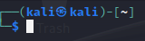
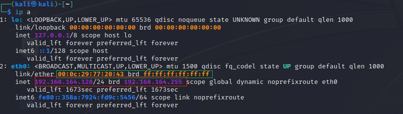

Inicio de sesion en kali-linux: user: kali - password: kali
Usar mucho sudo (o eso creo)
 1er kali- el usuario, el 2do es el host (la maquina)
SE PUEDEN TABULAR NOMBRES EN EL TERMINAL (EL TAB LO PUEDE HACER TODO + MOSTRAR COMANDOS)
COMANDOS:
[sudo] su - cambiar usuario a root
pwd ver en q directorio estamos en trabajando
clear = ctrl + L
man <comando> explica el comando
locate <fichero> muestra ubicaciones del archivo
updatedb actualizar la consola
passwd cambiar la contraseña (POPEYE)
chmod <permisos> <fichero> cambiar permisos
adduser añadir usuario

ip a = ifconfig

 ip n -> ip neighbor /// arp -> protocolo arp
ip n -> ip neighbor /// arp -> protocolo arp
 ip r -> ip route (routing table)
ip r -> ip route (routing table)
ping <red> [-c <num>]

netstat no se q hace
touch <nombre_fichero> crea un fichero
nano / vi / vim (preferible nano)
tree
mousepad <fichero> abre fichero como "notas"
sudo service apache2 start | stop poder acceder al servidor?
python 3 -m http.server 80 hacer un servidor web con python: AL HACER CTRL + C SE CIERRA EL SERVIDOR
hosteas:

sudo systemctl enable | disable <servicio> habilita ssh al reiniciar el ordenador (servicio como ssh)
sudo apt update && apt upgrade hacer un update AL HACER UN NUPDATE SE PUEDEN ROMPER COSAS Y POR ESO ES MEJOR TENER DOS INSTANCIAS DE UNA MISMA
ping sweeper

comprobar si hay hosts creo